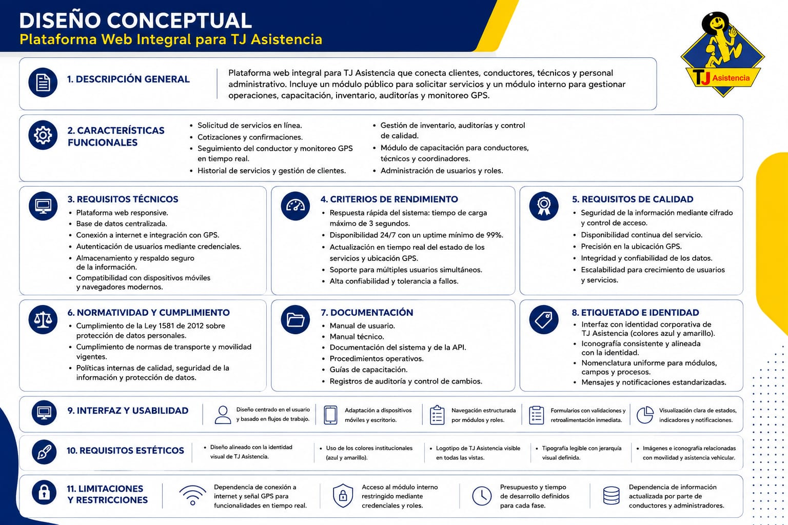
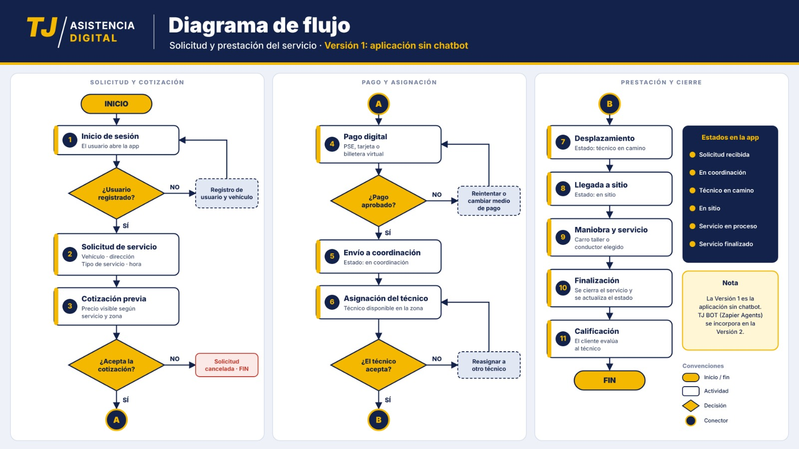
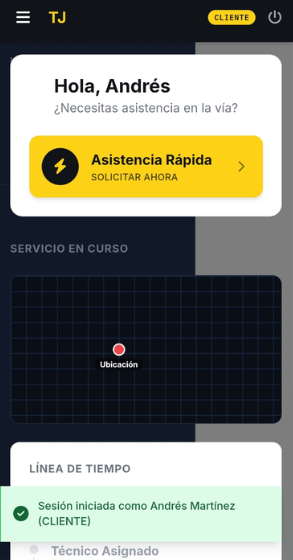
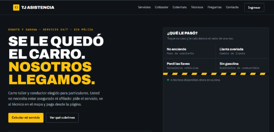
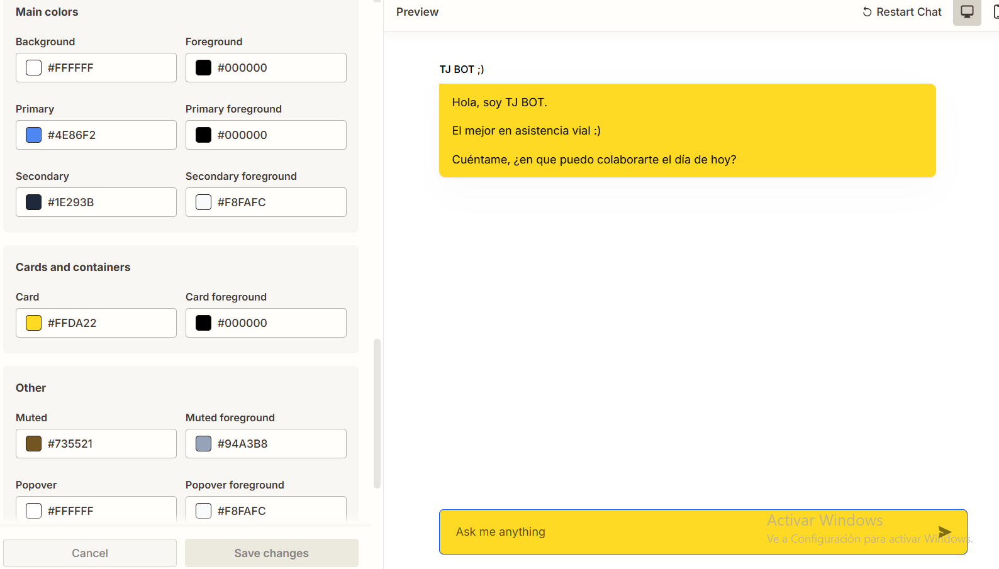
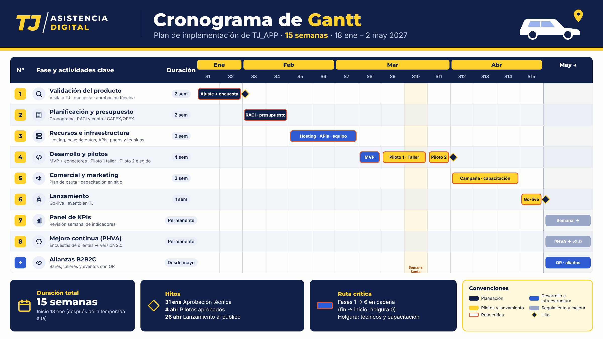

Implementación
15semanas
18 ene – 2 may 2027, después de la temporada alta.
TJ_APP es la plataforma digital propia de TJ Asistencia S.A.S. para que cualquier conductor pida carro taller o conductor elegido, conozca el precio antes de confirmar y siga al técnico, todo desde un solo lugar.
18 ene – 2 may 2027, después de la temporada alta.
Screening y scoring hasta elegir el chatbot (VER_35).
Inversión de $7 M en el escenario esperado (+11% de servicios).
Incluso en el escenario pesimista (+7% de servicios).
Empresa colombiana dedicada a la asistencia vehicular, el apoyo vial y el traslado seguro de personas y vehículos.
Coordina y ejecuta servicios de emergencia y movilidad vehicular en campo, con protocolos estrictos de confirmación telefónica, trazabilidad GPS y registro fotográfico de evidencias en tiempo real.
Atención móvil en sitio para desvares y emergencias menores: batería descargada, llanta pinchada, apertura del vehículo por llaves adentro y suministro de combustible.
Traslado seguro del usuario en su propio vehículo cuando no puede conducir.
Opera como proveedor aliado de las principales aseguradoras del país:
Hoy los servicios llegan a través de las plataformas de estas aseguradoras. TJ presta el servicio, pero no tiene un canal propio para atender a conductores particulares.
Agradecimiento: a William Parra, encargado de TJ Asistencia S.A.S., por abrirnos la operación, compartir su experiencia y acompañar el desarrollo del proyecto.
Necesidad / oportunidad: TJ depende de las plataformas de las aseguradoras, no tiene un canal propio para particulares y la trazabilidad es baja. La oportunidad es una app propia donde el particular pide el servicio, ve el precio antes de confirmar y sigue al técnico.
«El cliente normalmente está preocupado porque no sabe cuánto va a tardar la asistencia ni quién va a llegar.» — Coordinador operativo de TJ, entrevista exploratoria
Diseñar, prototipar y planear la implementación de TJ_APP, una plataforma digital propia de TJ Asistencia S.A.S. que permita a conductores particulares solicitar carro taller o conductor elegido, conocer el precio antes de confirmar y seguir el servicio, sin depender de una aseguradora.
Una plataforma digital que permite a los conductores solicitar ayuda, conocer previamente los costos y hacer seguimiento a sus servicios desde un solo lugar, con más comodidad, transparencia y eficiencia. Es una plataforma propia de TJ para pedir carro taller o conductor elegido sin depender de una aseguradora.
Centralizar en una sola plataforma la solicitud, la cotización, el seguimiento y el cierre de cada servicio de asistencia vial.
Conductores y propietarios de vehículos que, ante una falla o emergencia, necesitan encontrar asistencia de manera sencilla.
La dificultad para contactar prestadores de servicio, conocer los costos antes de aceptar y hacer seguimiento a la atención.
Cotiza, solicita, paga, sigue el servicio y califica.
Recibe el servicio, registra evidencias y obtiene la firma del cliente.
Asigna con apoyo del sistema y sigue la operación en el mapa.
Indicadores, tarifas, inventario, capacitación y reportes.
Funciones de esta versión: precio cerrado · pago con Bre-B o tarjeta · asignación asistida · seguimiento · evidencias con firma · factura electrónica.
Seguimos el proceso de desarrollo de producto de la asignatura: concepto inicial, versionamiento, concept screening y scoring, prototipado y business plan. Haz clic en cada fase.
Entender el problema desde el usuario, la empresa y el mercado antes de proponer una solución.
Comprobar con números si la plataforma se paga sola antes de diseñarla en detalle.
Explorar muchas alternativas, elegir una con criterios y convertirla en un prototipo que se pueda probar.
Definir cómo se sostiene el producto y cómo llevarlo a la operación real de la empresa.
No llegamos directo a la propuesta final: cada herramienta respondió una pregunta y cambió algo de la idea inicial.
10 áreas tecnológicas, 11 competidores, 7 patentes y 9 normas colombianas revisadas.
Aportó: la brecha digital local (los competidores aún coordinan por WhatsApp o teléfono), que el flujo general está patentado desde 2009 —la ventaja es la ejecución local— y las reglas de datos (Ley 1581), consumidor (Ley 1480) y evidencias (Ley 527).
Pasar de depender de aseguradoras intermediarias a vender directamente al conductor particular.
Aportó: autonomía, mejor margen y relación directa con el cliente final; redefinió el usuario objetivo del producto.
Ecosistema de aliados para captar demanda en momentos clave.
Aportó: canales físicos de captación: códigos QR en bares y discotecas para conductor elegido, remisión a talleres aliados cuando la falla no se resuelve en vía y zonas de encuentro en eventos.
Comparado con cascada y ágil: planear, desarrollar, validar y ajustar por versiones.
Aportó: validar primero lo esencial (MVP) y dejar el GPS avanzado, la analítica y la IA avanzada para versiones posteriores.
Post-its con el profesor, agrupados por afinidad, y luego screening y scoring.
Aportó: 50 versiones del producto en cinco etapas y una forma objetiva de elegir entre ellas.
Gemini para construir el prototipo web; Zapier con OpenAI para el asistente TJ BOT.
Aportó: un prototipo funcional y un asistente 24/7 a bajo costo, sin un equipo de desarrollo dedicado.

Plataforma integral: módulo público y módulo interno a la vez.

App sin chatbot: flujo de 11 pasos.
Primero un filtro rápido (concept screening) y luego una calificación ponderada (concept scoring) de las finalistas.
Desde la app corporativa (VER_1) hasta TJ 360° (VER_50).
Cada versión frente a la referencia VER_1: «+» mejor, «0» igual, «−» peor. Pasan las de puntaje neto ≥ 3.
Calificación de 1 a 5 con criterios ponderados. Sigue la que supere 3,0: VER_35, chatbot de atención inicial.
| Versión | Innovación | Automat. | Costo | Seguridad | Accesib. | Total |
|---|---|---|---|---|---|---|
| VER_35 · Chatbot inicial | 2 | 5 | 2 | 3 | 3 | 3,20 |
| VER_25 · Facturación digital | 1 | 3 | 3 | 4 | 3 | 2,95 |
| VER_46 · Ecosistema financiero | 2 | 2 | 5 | 3 | 3 | 2,90 |
| VER_50 · TJ 360° | 3 | 3 | 1 | 3 | 4 | 2,90 |
| VER_24 · Pagos digitales | 1 | 4 | 2 | 4 | 2 | 2,85 |
| VER_47 · IA avanzada | 5 | 4 | 1 | 2 | 2 | 2,80 |
| VER_23 · Renovación automática | 1 | 4 | 3 | 3 | 2 | 2,75 |
| VER_49 · TJ inteligente | 3 | 4 | 1 | 2 | 3 | 2,70 |
| VER_48 · Plataforma integral | 2 | 2 | 3 | 1 | 2 | 1,90 |
| VER_1 · Referencia | 2 | 3 | 2 | 2 | 4 | 2,65 |
Fuente: Concept_Screening_50_Versiones y Concept_Scoring_Versiones_Escogidas (Excel del equipo). Escala 1 = muy bajo · 5 = muy alto; en costo, 5 = menor costo.
Automatización y seguridad pesan más porque atacan los dos problemas centrales: la coordinación manual y la confianza del cliente en una emergencia.
La línea marca el umbral de 3,0 para continuar al prototipo.
No se pudo cargar la gráfica. Los datos están en la tabla de arriba.
Plataforma web y móvil adaptable: funciona en celular, tableta o computador, y prioriza la rapidez en situaciones de urgencia o traslado, sin intermediarios (modelo B2C).


sites.google.com/view/tjasistencia/page
Vehículo
Tipo de asistencia
Ubicación
Revisión y pago
Celular, tableta o computador, pensada para la urgencia.
Solicitar, cotizar y confirmar sin fricción ni incertidumbre.
Carro taller (por ejemplo, paso de corriente) y conductor elegido.
Valor estimado antes de confirmar: referentes de $45.000 (carro taller) y $85.000 (conductor elegido local).
Ubicación del técnico o conductor (GPS) y estados claros del servicio.
Zapier + OpenAI: resuelve dudas, orienta y apoya las cotizaciones de forma continua.
Pasarela en línea, factura electrónica DIAN y coordinación del despacho.
Azul oscuro, amarillo y blanco; desarrollo por versiones en espiral y diseño concurrente.
Antes: el menú lateral tapaba el cotizador.
Después: menú
deslizable que deja libre toda la pantalla.
Antes: diseño genérico.
Después: amarillo institucional,
tipografía grande y mayor contraste.
Antes: fondo cian saturado.
Después: fondo blanco y globos
amarillos, a pedido de la gerencia de TJ.
Antes: parecía que el bot agendaba el servicio.
Después: guía
informativa que deriva a una persona.

El Business Model Canvas responde las tres preguntas; el análisis de ROI muestra si la inversión se recupera.
La plataforma (código, cotizador, base de datos, nube) unida a la red física de técnicos, conductores y dotación.
App, alianzas y redes sociales unificados como un solo canal.
Inversión inicial (diseño, programación, APIs y lanzamiento) · costos fijos de tecnología · pago al técnico por servicio · administración y marketing.
Pago directo por servicio. Carro taller $45.000 (corriente, llanta, gasolina) · cerrajería $65.000 · conductor elegido desde $75.000 según la zona.
El ROI mide cuánto gana o recupera la empresa en relación con lo que invirtió: ROI = (utilidad incremental × meses − inversión) / inversión. Con una inversión inicial de $7.000.000 y un costo fijo de la app de $57.733 al mes, se proyectan tres escenarios de aumento sobre los 1.100 servicios mensuales actuales.
No se pudo cargar la gráfica. Pesimista: 283% · esperado: 507% · optimista: 731% al mes 12.
No se pudo cargar la gráfica. Los datos están en las tarjetas de escenarios.
CT = carro taller · CE = conductor elegido. Supuestos del informe: precio CT $45.000 con costo variable de $20.000; precio CE $80.000 con costo variable de $42.000; los servicios adicionales llegan desde el primer mes. El ROI del esperado y del optimista se calculó con la misma fórmula del informe.
Gestión predictiva por fases: las fases 1 a 6 van en secuencia fin → inicio con holgura cero, y desde mayo arrancan los frentes permanentes de operación y expansión.

Visita técnica a TJ, levantamiento de requerimientos reales, encuesta de validación a usuarios y ajuste funcional del prototipo.
Cronograma detallado en Notepath, matriz RACI y control presupuestal CAPEX/OPEX.
Hosting en la nube, base de datos, APIs de geolocalización y pagos, facturación DIAN y alistamiento del equipo técnico.
MVP y conectores (S8). Piloto 1 solo con carro taller (S9–S10, con contingencia de Semana Santa) y Piloto 2 con conductor elegido (S11).
Pauta digital de prelanzamiento, kits visuales y capacitación en sitio a conductores y despacho.
Publicación oficial, apertura comercial al público y evento de lanzamiento en las instalaciones de TJ.
Monitoreo semanal: tiempo de asignación, conversión, costo de adquisición, ticket promedio y NPS.
Ciclos planear-hacer-verificar-actuar con encuestas post-servicio y analítica de uso.
Códigos QR en bares, restaurantes, talleres y eventos para pedir conductor elegido o asistencia al instante.
| Entregable / proceso clave | Gerencia TJ | Líder de proyecto | Equipo tech / dev | Operaciones / mkt |
|---|---|---|---|---|
| Validación técnica y aprobación de alcance (F1) | A | R | C | C |
| Presupuesto CAPEX/OPEX y cronograma maestro (F2) | A | R | I | C |
| Infraestructura cloud, bases de datos y APIs (F3) | I | A | R | I |
| Desarrollo del MVP y pilotos 1 y 2 (F4) | I | A | R | R (campo) |
| Campaña de pauta y capacitación en sitio (F5) | A | C | I | R |
| Lanzamiento y control semanal de KPIs/PHVA (F6–F8) | A | R | C | R |
Iniciar los trámites con el proveedor de pagos desde la semana 4 y habilitar el entorno de pruebas (sandbox) en la semana 5.
Concentrar la configuración y las pruebas del Piloto 1 en la semana 9 y dejar la 10 para pruebas de estrés y ajustes.
Incluir conductores líderes en la validación temprana y capacitar en sitio con incentivos por adopción (S12–S14).
Documentos fuente del semestre, listos para descargar o consultar.
Entorno, customer journey, vigilancia, factibilidad, versiones, scoring y prototipo.
DescargarAlineación con el BMC, EDT, ruta crítica, RACI, riesgos y repositorio de evidencias.
Descargar15 semanas, 8 fases, hitos y ruta crítica.
DescargarTecnologías, tendencias, patentes, benchmark y normas aplicables.
DescargarLas 50 versiones frente a la referencia VER_1.
DescargarCalificación ponderada de las 9 finalistas.
DescargarLos nueve bloques del modelo de negocio de TJ_APP.
DescargarPrototipo en Google Sites con TJ BOT y el código de esta página en GitHub.
Solicitudes, técnicos, evidencias e historial quedan centralizados en una sola herramienta propia de TJ.
El conductor conoce el precio antes de confirmar, sigue el servicio y tiene a TJ BOT disponible 24/7.
Un canal B2C que complementa a las aseguradoras y recupera la inversión en pocos meses, incluso en el escenario pesimista.
Del intermediario al cliente: TJ llega directo.
Desarrollo de Productos
Desarrollo de Productos
Desarrollo de Productos
Desarrollo de Productos